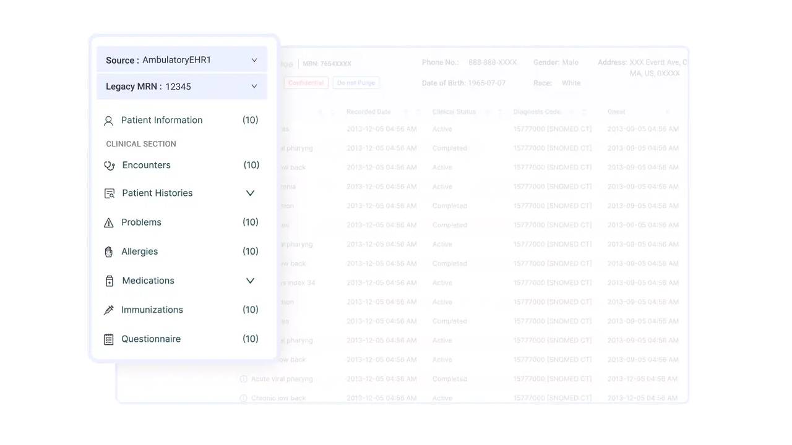
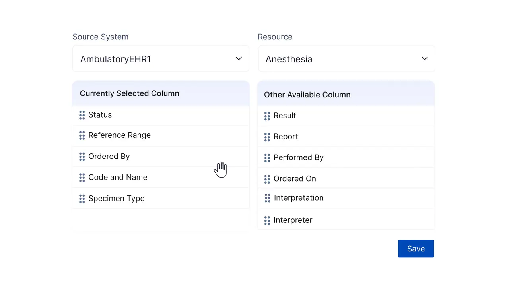
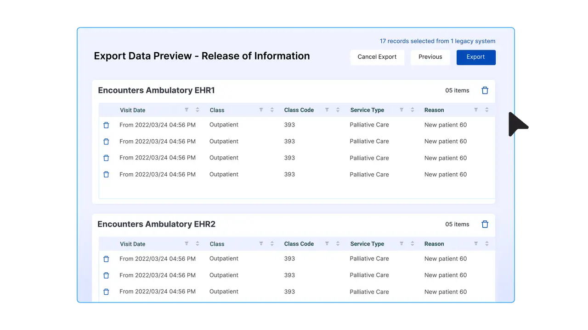
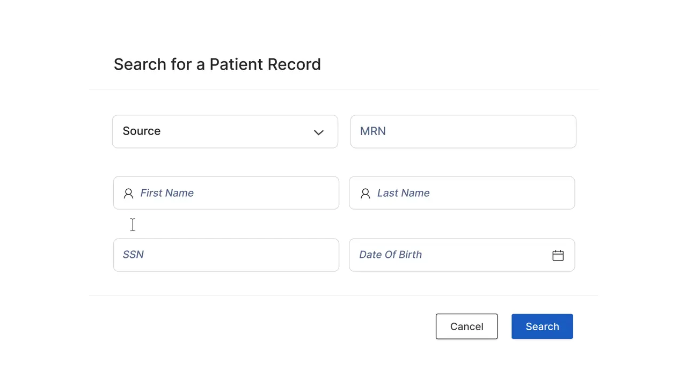
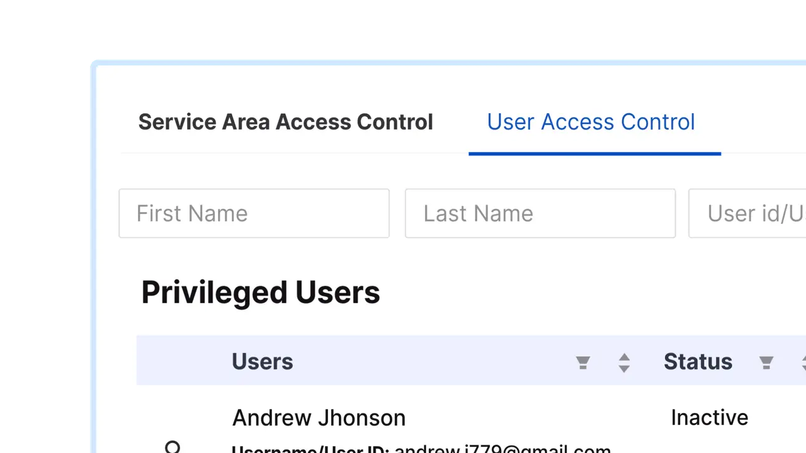

Find the right patient
Names repeat. MRNs change across systems. Search needed enough identifiers to disambiguate a record before anyone opened it.
Risk: wrong-patient accessWe led product design for Muspell’s clinical archive: one secure place to find, understand, and release records trapped across retired hospital systems.
Read the case study
01 / The problem
When a health system moves to a modern EHR, years of records remain in systems that are expensive to maintain but risky to switch off. Muspell turns those disconnected archives into one FHIR-native access layer.
314e describes Muspell as cloud-based and FHIR-native, with support for 30+ EHRs and more than 1 PB of archived customer data. These are company-reported product metrics—not impact attributed to our design work.
View product source ↗The design challengeHow might we make scattered records feel unified without hiding where the data came from—or who is allowed to see it?
02 / Framing the work
Early conversations with product, engineering, HIM, and hospital IT moved us away from a generic “health dashboard.” We framed the experience around three high-stakes jobs.
Names repeat. MRNs change across systems. Search needed enough identifiers to disambiguate a record before anyone opened it.
Risk: wrong-patient accessA free-text allergy from an older system does not carry the same certainty as a coded entry. Source and provenance had to travel with the data.
Risk: false clinical certaintyHIM teams needed selection, export, disclosure history, and auditability—not just a download button.
Risk: incomplete disclosure
The product principles
Keep source system and legacy MRN in the patient context.
Preserve familiar clinical categories and counts in navigation.
Let scanning-heavy and reading-heavy roles choose different views.
Permissions, disclosure, and configuration belong in the core experience.
03 / Three design decisions
Instead of adding more instruction, we kept the patient, source, and permitted actions visible at the moment each decision was made.
The header keeps identity, source system, legacy MRN, demographics, and workflow actions stable while the record changes beneath it.
Records can span multiple sources and identifiers.
Persistent patient context + source badges.

HIM specialists scan many rows; clinicians inspect one encounter deeply. A remembered view switch supports both modes without forcing a lowest-common-denominator layout.
Scanning and comprehension pull density in opposite directions.
Role-friendly views with persistent preference.


Administrators can choose which clinical fields appear for a source and resource. That accommodates uneven legacy data without multiplying one-off interfaces.
Each source arrives with different fields and naming.
Reusable, drag-to-order column configuration.

04 / The miss
Our first framing optimized retrieval and pushed disclosure into a secondary action. Pilot feedback exposed the gap: choosing records, preparing a release, tracking it, and proving what was sent is an end-to-end workflow.
A utility action attached to a record.
An asynchronous, traceable work queue.

ROI became a first-class module with request queues, selection, customizable forms, disclosure logs, and asynchronous processing.
We now map the operational lifecycle—not only the screen where the user touches the data. In enterprise tools, the handoff is often the product.
05 / Proof & reflection
The final experience joins patient retrieval, clinical reading, administration, and disclosure without pretending the underlying data is simple.


customer data archived
EHRs managed by 314e’s archival experts
legacy systems archived
data extraction and conversion projects delivered
Scale metrics are reported by 314e on the current Muspell product page. They show product maturity and reach; they are not presented as causal UX outcomes from this design phase.
What we’re proud of
The strongest part of the work is not visual minimalism. It is that Muspell keeps the awkward truths visible: where a record originated, which identifier belongs to which system, what a role can access, and what was released. In clinical software, clarity is a safety feature.